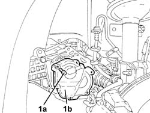

2110C30 GEARBOX REAR COVER - R + R.
- Path
- Procedures > 21 GEARBOX UNIT > 2110 MANUAL GEARBOX WITH DIFFERENTIAL > 2110C GEAR CASES AND COVERS OF MANUAL GEARBOX WITH DIFFERENTIAL > 2110C30 GEARBOX REAR COVER - R + R.
- Kind
- repair procedure (removal / refitting; the operation number is the code)
- Applies to
- engines: 1.8 T.SPARK, 2.0 JTS; all production periods
- Interactive page
- https://sloeber94.github.io/elrnDB-aGt/en/#/125001248
Applies to: engines: 2.0 JTS; all production periods
 Removing
Removing
 Refitting
RefittingPosition the vehicle on a lift.
Proceed with the removal
Op. 4450B02 LEFT FRONT WHEEL R R.
Proceed with the removal
Op. 7055B65 ENGINGE BAY DUSTGUARD PROTECTION IN LEFT FRONT WHEEL ARCH R R.
Proceed with the removal
Op. 7055B90 LEFT FRONT WHEEL ARCH LINER - R.R..
Proceed with the removal
Op. 7055B54 UNDER-ENGINE GUARD - R R.
Position a suitable container for collecting the transmission fluid that comes out.
1. Undo the bolts (1a) and remove the gearbox rear cover (1b).

Applies to: engines: 2.0 JTS; all production periods
Refitting
RemovingApply sealant to the contact surfaces betwen the main and layshaft rear bearings retaining plate and the rear cover.
Type | Component | Description | Qty. | |
|---|---|---|---|---|
- | Sealant | REAR COVER MANUAL GEARBOX/DIFFERENTIAL | LOCTITE 573 | - |
Fit the rear cover and secure it tightening the bolts to the recommended torque.
Fastening | Component | Ø | Value (daNm) | |
|---|---|---|---|---|
- | Bolt | REAR COVER MANUAL GEARBOX/DIFFERENTIAL | M8 | 2.3 ÷ 2.8 |
Proceed with the refitting
Op. 7055B54 UNDER-ENGINE GUARD - R R.
Proceed with the refitting
Op. 7055B90 LEFT FRONT WHEEL ARCH LINER - R.R..
Proceed with the refitting
Op. 7055B65 ENGINGE BAY DUSTGUARD PROTECTION IN LEFT FRONT WHEEL ARCH R R.
Proceed with the refitting
Op. 4450B02 LEFT FRONT WHEEL R R.
Refit the manual gearbox with differential
Op. 0010T41 MANUAL GEARBOX OIL CHECK LEVEL AND TOP UP IF NECESSARY.
Remove the vehicle from the lift.
Applies to: engines: 1.8 T.SPARK; all production periods
Removing
Refitting- Position the vehicle on a lift.
- Op. 4450B02 LEFT FRONT WHEEL R R
- Op. 7055B65 ENGINGE BAY DUSTGUARD PROTECTION IN LEFT FRONT WHEEL ARCH R R
- Position a suitable container for collecting the transmission fluid that comes out.
- Undo the bolts (1a) and remove the gearbox rear cover (1b).
Applies to: engines: 1.8 T.SPARK; all production periods
Refitting
Removing- Apply sealant to the contact surfaces betwen the main and layshaft rear bearings retaining plate and the rear cover.
Type | Component | Description | Qty. | |
|---|---|---|---|---|
- | Sealant | REAR COVER MANUAL GEARBOX/DIFFERENTIAL | Loctite 573 | - |
- Fit the rear cover and secure it tightening the bolts to the recommended torque.
Fastening | Component | Ø | Value (daNm) | |
|---|---|---|---|---|
- | Bolt | REAR COVER | M8 | 2.3 ÷ 2.8 |
Topics linked from this page (5)
- 0010T41 MANUAL GEARBOX OIL CHECK LEVEL AND TOP UP IF NECESSARY
- 4450B02 LEFT FRONT WHEEL R R
- 7055B54 UNDER-ENGINE GUARD - R R
- 7055B65 ENGINGE BAY DUSTGUARD PROTECTION IN LEFT FRONT WHEEL ARCH R R
- 7055B90 LEFT FRONT WHEEL ARCH LINER - R.R.